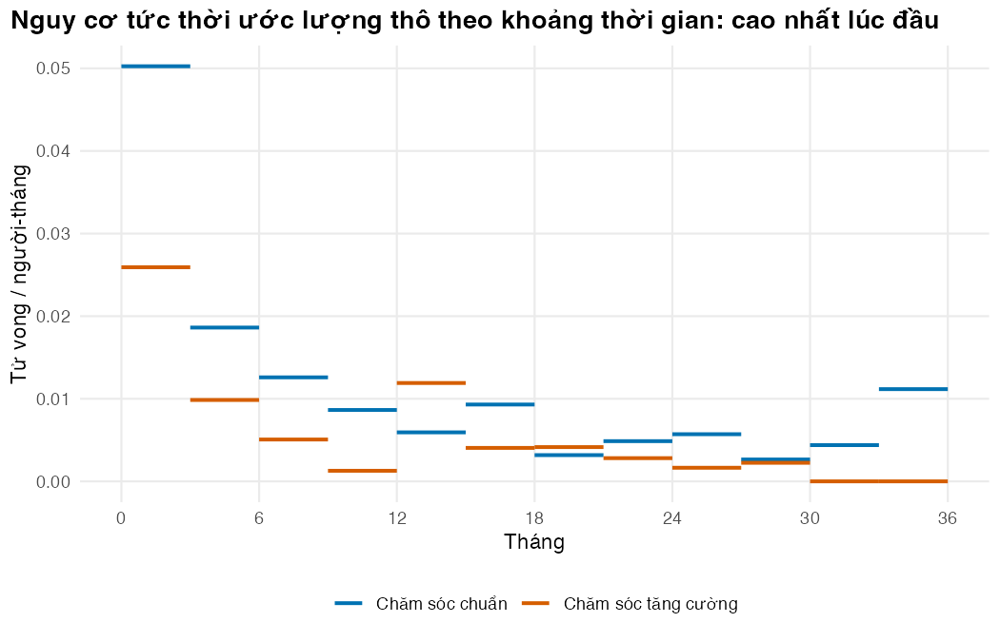

Bài 1: Ôn tập phân tích sống còn cho người làm mô hình
Đọc đường Kaplan–Meier như người làm mô hình: biết nó cho gì và còn thiếu gì
Vì sao bạn nên quan tâm?
Cuối năm, khoa lao/HIV của một bệnh viện Phổi tỉnh tổng kết số liệu và tự hỏi người bệnh của mình có giống con số cả nước không. Trong đoàn hệ điều trị năm 2023 của cả nước, 177 trong số 2,310 người bệnh lao có HIV tử vong khi đang điều trị (7.7%), và 117 người khác bỏ điều trị (lost to follow-up) mà không ai biết còn sống hay không (World Health Organization 2026). Thuốc lao cho cả đợt 6 tháng chỉ khoảng 1,200,000 VNĐ, bằng giá 30 bát phở (McConnell 2025; Nhadautu.vn 2025); điều quyết định giá trị của một gói chăm sóc thêm là nó giữ được bao nhiêu tháng sống. Bài này giúp bạn đọc đường Kaplan–Meier: người chết, người bị mất dấu nói gì, và mô hình còn cần gì trước khi quyết định có nên chi cho gói chăm sóc tăng cường.
Mục tiêu học tập
Sau bài này, bạn có thể:
Định nghĩa hàm sống còn S(t), nguy cơ tức thời (hazard) h(t), nguy cơ tích lũy H(t) và chuyển đổi giữa chúng.
Tính ước lượng Kaplan–Meier bằng tay và đối chiếu với survfit().
Nhận diện các kiểu kiểm duyệt và giả định kiểm duyệt không mang thông tin.
Ước lượng nguy cơ tức thời thô theo khoảng thời gian để thấy hình dạng nguy cơ.
Giải thích vì sao mô hình quyết định cần cả đường S(t) tới hết khung thời gian, không chỉ trung vị hay HR.
Ý chính
Dữ liệu sống còn là cặp (thời gian, trạng thái). Người bị kiểm duyệt (censoring) vẫn cho thông tin: họ sống ít nhất tới lúc bị kiểm duyệt.
S(t), h(t), H(t) và f(t) mô tả cùng một phân phối: S(t) = exp(−H(t)).
Ước lượng Kaplan–Meier (KM) là tích các xác suất sống qua từng thời điểm có sự kiện; nó đúng khi kiểm duyệt không liên quan tới tiên lượng.
Hình dạng nguy cơ tức thời (giảm, tăng, không đổi) quyết định cách ngoại suy, quan trọng hơn trung vị.
Mô hình chu kỳ tháng cần p(t) = 1 − S(t+1)/S(t) cho mọi tháng tới hết khung thời gian.
Thời gian sống trung bình là diện tích dưới S(t). KM dừng khi phần lớn người bệnh còn sống, nên trung bình chưa biết nếu không ngoại suy.
Thời gian sống trung bình giới hạn (RMST) là diện tích dưới KM tới mốc τ: đo được ngay, không cần giả định nguy cơ tỷ lệ.
Nội dung
Dữ liệu sống còn và kiểm duyệt
Phân tích sống còn (survival analysis) nghiên cứu thời gian từ một mốc (vào nghiên cứu) tới một sự kiện (tử vong, tái phát). Đặc trưng của nó là kiểm duyệt (censoring): với một số người, ta chỉ biết sự kiện chưa xảy ra tới lần liên lạc cuối, vì nghiên cứu đã đóng cơ sở dữ liệu (kiểm duyệt hành chính, người vào muộn được theo dõi ngắn hơn) hoặc vì họ bị mất dấu theo dõi. Trong nghiên cứu, “lost to follow-up” nghĩa là mất dấu theo dõi; trong báo cáo của chương trình chống lao, cùng cụm từ là kết quả “bỏ điều trị”.
Trong thử nghiệm mô phỏng của module, nhánh chăm sóc chuẩn có 91 tử vong và 209 người bị kiểm duyệt trên tổng số 300 người. Bỏ người bị kiểm duyệt làm ước lượng sống còn quá thấp; coi họ sống tới cuối làm ước lượng quá cao. KM xử lý đúng, với điều kiện kiểm duyệt không mang thông tin (non-informative censoring): người bị kiểm duyệt có tiên lượng giống người còn được theo dõi. Nếu người nặng hay bỏ khám hơn, giả định này sai và không phương pháp nào ở đây sửa được: 117 người bỏ điều trị trong đoàn hệ năm 2023 ở trên chính là câu hỏi đó.
Thế giới mô phỏng được neo vào CAMELIA (Blanc và c.s. 2011). Trong một đoàn hệ mô phỏng rất lớn, không bị kiểm duyệt, tới tháng 25 (thời gian theo dõi trung vị của CAMELIA) có 27.2% người ở nhánh chuẩn và 17.8% ở nhánh tăng cường đã tử vong, so với 27.4% ở nhánh ART muộn và 17.8% ở nhánh ART sớm của thử nghiệm. Con số 7.7% của đoàn hệ Việt Nam thấp hơn cả hai. Ba lý do khả dĩ: quần thể rộng hơn (không giới hạn ở CD4 ≤200), chỉ đếm tử vong trong thời gian điều trị lao, và một phần người bỏ điều trị có thể đã tử vong mà không được ghi nhận.
Nguy cơ tức thời (hazard) h(t) là tỷ suất xảy ra sự kiện tại thời điểm t ở những người chưa gặp sự kiện. Nó có đơn vị nghịch đảo thời gian, như mọi tỷ suất ở M02 Bài 2. Với chu kỳ một tháng, xác suất tử vong trong tháng thứ t+1 ở người còn sống đầu tháng là
Đây là cầu nối giữa phân tích sống còn và mô hình chuyển trạng thái: chỉ cần S(t), hoặc H(t), là có xác suất chuyển trạng thái cho từng chu kỳ.
Ước lượng Kaplan–Meier
Tại mỗi thời điểm có sự kiện \(t_j\), gọi \(n_j\) là số người còn nguy cơ (number at risk: chưa chết, chưa bị kiểm duyệt ngay trước \(t_j\)) và \(d_j\) là số tử vong. Khi đó (Kaplan và Meier 1958):
Người bị kiểm duyệt tại \(t\) vẫn được tính vào \(n_j\) ở chính thời điểm đó, rồi rời nhóm nguy cơ. Đường KM là hàm bậc thang: chỉ rơi tại thời điểm có tử vong, đi ngang giữa các lần đó. Ví dụ tám người trong phần thực hành cho thấy rõ từng bước.
Hình dạng nguy cơ tức thời
Chia trục thời gian thành các khoảng và lấy số tử vong chia cho tổng người-tháng nguy cơ trong mỗi khoảng, ta có nguy cơ tức thời thô. Ở nhánh chăm sóc chuẩn, nguy cơ trong khoảng 3 tháng đầu là 0.050 mỗi tháng, gấp 9.1 lần mức trung bình từ tháng 12 tới tháng 36 (0.0055). Trong dữ liệu mô phỏng, nguy cơ cao lúc đầu rồi giảm. Ở thử nghiệm CAMELIA, yếu tố liên quan tới tử vong trong nửa năm đầu cũng khác với sau khoảng một năm (Marcy và c.s. 2014), tức nguy cơ không đồng nhất theo thời gian. Bài 2 dùng hình dạng này để loại các phân phối không phù hợp.
Mô hình quyết định cần gì từ dữ liệu sống còn
Bài báo thường báo cáo trung vị sống còn và tỷ số nguy cơ tức thời (hazard ratio, HR). Mô hình kinh tế cần nhiều hơn:
S(t) ở mọi chu kỳ tới hết khung thời gian, để tính xác suất chuyển trạng thái và thời gian ở từng trạng thái.
Diện tích dưới đường cong, vì năm sống trung bình bằng \(\int_0^\infty S(t)\,dt\). QALY và chi phí tính trên cùng diện tích đó.
Một đường cong trơn. KM cho xác suất tử vong bằng 0 ở những tháng không có ai chết (ở nhánh chăm sóc chuẩn là 5 trong 30 tháng đầu), và các bước rơi ở phần đuôi chỉ dựa trên vài người.
Trong thử nghiệm này, KM của nhánh chăm sóc chuẩn dừng ở 0.655, nhánh chăm sóc tăng cường ở 0.814. Trung vị sống còn chưa đạt, và thời gian sống trung bình chưa tính được nếu không ngoại suy. Thứ đo được ngay là RMST (restricted mean survival time), diện tích dưới KM tới một mốc τ (Royston và Parmar 2013). Tới 30 tháng, RMST là 23.03 tháng ở nhánh chăm sóc chuẩn và 25.93 tháng ở nhánh tăng cường, tức thêm 2.91 tháng sống. Mô hình cần con số tương tự nhưng cho cả đời người, và đó là việc của Bài 2 và Bài 3.
flowchart LR A["Dữ liệu cá thể<br/>(thời gian, trạng thái)"] --> B["KM và nguy cơ<br/>tức thời thô (Bài 1)"] B --> C["Mô hình tham số<br/>(Bài 2)"] C --> D["Ngoại suy có<br/>tử vong nền (Bài 3)"] D --> E["Mô hình quyết định<br/>PSM hoặc STM (Bài 5)"] F["Chỉ có bài báo:<br/>tái tạo IPD (Bài 4)"] --> B
flowchart LR
A["Dữ liệu cá thể<br/>(thời gian, trạng thái)"] --> B["KM và nguy cơ<br/>tức thời thô (Bài 1)"]
B --> C["Mô hình tham số<br/>(Bài 2)"]
C --> D["Ngoại suy có<br/>tử vong nền (Bài 3)"]
D --> E["Mô hình quyết định<br/>PSM hoặc STM (Bài 5)"]
F["Chỉ có bài báo:<br/>tái tạo IPD (Bài 4)"] --> B
Thực hành
Chạy cả bài bằng Rscript code/l01-survival-basics.R từ thư mục module. Đoạn đầu nạp hàm, tham số và sinh thử nghiệm mô phỏng với hạt giống cố định.
# Vietnamese text in figures needs a UTF-8 locale (Rscript may start in the "C" locale)if (!isTRUE(l10n_info()[["UTF-8"]])) invisible(Sys.setlocale("LC_CTYPE", "en_US.UTF-8"))source("../_shared/R/helpers.R")source("../_shared/R/vn_data.R") # course-wide context, unit prices and life tablesource("code/model.R")suppressPackageStartupMessages({library(ggplot2)library(survival)})ps <-read_params("params/sim_truth.csv") # the hidden "true world" of the simulationpm <-read_params("params/model_inputs.csv") # inputs of the decision modelcfg <-read_params("params/lesson_settings.csv") # settings of the lessons (band widths, tau, ...)ctx <-vn_context() # course-wide: discount rate, threshold, exchange rate, wagespr <-vn_prices() # course-wide unit prices (BHYT fees, tests, ART, bed-days)inp <-build_inputs(pm, ctx, pr) # decision-model inputs: module values + shared values and priceslt <-vn_lifetable("both") # WHO life table, Viet Nam 2023, both sexestrial <-simulate_trial(ps, lt, seed = SEED_TRIAL)
Mỗi người một dòng. Bảng đếm cho số tử vong, số bị kiểm duyệt và thời gian theo dõi dài nhất mỗi nhánh; stopifnot() xác nhận đủ người, thời gian dương, EFS không dài hơn OS.
# One row per person: follow-up time (months) and event indicator (1 = event, 0 = censored)head(trial, 4)
arm n deaths censored max_follow_up
1 soc 300 91 209 35.85782
2 enh 300 54 246 35.88463
# Checks: counts agree with survfit(), which counts events its own way; times are positive;# EFS never lasts longer than OS (an event-free person must be alive)sf_count <-summary(survfit(Surv(os_time, os_event) ~ arm, data = trial))$tablestopifnot(nrow(trial) ==2* ps$n_per_arm,all(trial$os_time >0),all(trial$efs_time <= trial$os_time +1e-12),all(counts$deaths == sf_count[, "events"]),all(counts$n == sf_count[, "records"]))
Kiểm tra mô phỏng có “giống thật” không: tính tử vong thật tới tháng 25 trong một đoàn hệ mô phỏng 100,000 người mỗi nhánh rồi so với hai nhánh CAMELIA. stopifnot() dừng script nếu chênh quá 3 điểm phần trăm; cuối chunk là tỷ lệ tử vong trong đoàn hệ Việt Nam năm 2023 để so.
# The simulated world is anchored to CAMELIA (TB/HIV, CD4 <= 200, Cambodia): true deaths by# the trial's median follow-up, from a very large uncensored simulated cohort, against the# published proportions (late ART ~ standard care, early ART ~ enhanced care)truth_fu <-true_curves(ps, lt, pm$fu_camelia_months, seed = SEED_TRUTH)anchor <-data.frame(arm = ARMS,sim_true_deaths =sapply(ARMS, function(g) 1-tail(truth_fu$os[truth_fu$arm == g], 1)),camelia =c(pm$deaths_camelia_late / pm$n_camelia_late, pm$deaths_camelia_early / pm$n_camelia_early))anchor$gap <- anchor$sim_true_deaths - anchor$cameliaround(anchor[, -1], 3)
stopifnot(all(abs(anchor$gap) <0.03)) # stated tolerance: within 3 percentage points# Vietnamese routine data for comparison: deaths during TB treatment, HIV-positive TB, 2023 cohortp_died_vn <- pm$vn_tbhiv_died_2023 / pm$vn_tbhiv_cohort_2023p_died_vn
[1] 0.07662338
stopifnot(p_died_vn <min(anchor$camelia)) # prose claim: the national figure is below both CAMELIA arms
Ví dụ tám người giúp thấy cách tính KM. Ở tháng 2 có một người chết và một người bị kiểm duyệt: cả hai đều được tính vào số còn nguy cơ tại tháng 2. Hàm tự viết km_by_hand() phải cho kết quả trùng với survfit().
# Eight people, times in months; status 1 = died, 0 = censored (alive at last contact)toy <-data.frame(time =c(1, 2, 2, 4, 5, 7, 8, 10),status =c(1, 0, 1, 1, 0, 1, 0, 0))km_toy <-km_by_hand(toy$time, toy$status)km_toy
# Same numbers from the survival packagefit_toy <-survfit(Surv(time, status) ~1, data = toy)stopifnot(all(abs(km_toy$surv -summary(fit_toy)$surv) <1e-12))
Cùng hàm đó áp lên nhánh chăm sóc chuẩn. Chênh lệch lớn nhất với survfit() phải bằng 0 (sai số làm tròn của máy).
# The same hand-written estimator on the standard-care arm, checked against survfit()d_soc <-endpoint_data(trial, "os", "soc")km_soc <-km_by_hand(d_soc$time, d_soc$status)sf_soc <-survfit(Surv(time, status) ~1, data = d_soc)max_diff <-max(abs(km_soc$surv -summary(sf_soc)$surv))max_diff
[1] 1.110223e-16
stopifnot(max_diff <1e-12)
Vẽ KM hai nhánh với dấu kiểm duyệt và in số người còn nguy cơ mỗi 6 tháng; số này giảm nhanh ở cuối do kiểm duyệt hành chính.
km_list <-list()cens_list <-list()for (g in ARMS) { d <-endpoint_data(trial, "os", g) km <-km_by_hand(d$time, d$status) km_list[[g]] <-data.frame(time =c(0, km$time), surv =c(1, km$surv), arm = ARM_LABELS[[g]]) cens_t <- d$time[d$status ==0] cens_list[[g]] <-data.frame(time = cens_t, surv =km_at(km, cens_t), arm = ARM_LABELS[[g]])}km_df <-do.call(rbind, km_list)cens_df <-do.call(rbind, cens_list)fig_km <-ggplot(km_df, aes(time, surv, colour = arm)) +geom_step(linewidth =0.9) +geom_point(data = cens_df, shape =3, size =1.2) +scale_colour_manual(values = pal_course[1:2], name =NULL) +scale_x_continuous(breaks =seq(0, ps$study_months, 6)) +coord_cartesian(ylim =c(0.5, 1)) +labs(x ="Tháng kể từ khi vào nghiên cứu", y ="Tỷ lệ còn sống (KM)",title ="Sống còn toàn bộ trong thử nghiệm mô phỏng\n(dấu + là kiểm duyệt)") +theme_course()save_fig(fig_km, "l01-km.png")# Numbers at risk, as printed under a published KM figure (one column every step_show months)step_show <-6sf_both <-survfit(Surv(os_time, os_event) ~ arm, data = trial)at_risk <-summary(sf_both, times =seq(0, cfg$rmst_tau, by = step_show))risk_tab <-data.frame(arm = at_risk$strata, month = at_risk$time,n_risk = at_risk$n.risk, surv =round(at_risk$surv, 3))risk_tab
Nguy cơ tức thời thô trong từng khoảng 3 tháng. Kiểm tra rằng tổng số tử vong theo khoảng bằng tổng số tử vong quan sát, và để ý nguy cơ ở khoảng đầu cao hơn hẳn các khoảng sau.
# Crude hazard in 3-month bands: deaths / person-months at riskbreaks <-seq(0, ps$study_months, by = cfg$haz_band_months)hz_list <-list()for (g in ARMS) { d <-endpoint_data(trial, "os", g) hz <-interval_hazard(d$time, d$status, breaks) hz$arm <- ARM_LABELS[[g]] hz_list[[g]] <- hz}hz_df <-do.call(rbind, hz_list)hz_df[hz_df$start %in%c(0, cfg$haz_band_months, 12, 24), c("arm", "start", "end", "events", "person_time", "hazard")]
# Check: band-wise events add up to all observed deathsstopifnot(sum(hz_df$events) ==sum(trial$os_event))# Standard care: hazard in the first band versus months 12 to the end, pooledhz_soc_first <-interval_hazard(d_soc$time, d_soc$status, c(0, cfg$haz_band_months))$hazardhz_soc_late <-interval_hazard(d_soc$time, d_soc$status, c(12, ps$study_months))$hazardc(first_band = hz_soc_first, months_12_to_end = hz_soc_late, ratio = hz_soc_first / hz_soc_late)
first_band months_12_to_end ratio
0.050257601 0.005547292 9.059844775
stopifnot(hz_soc_first > hz_soc_late) # prose claim: the hazard is highest at the startfig_hz <-ggplot(hz_df, aes(x = start, xend = end, y = hazard, yend = hazard, colour = arm)) +geom_segment(linewidth =0.9) +scale_colour_manual(values = pal_course[1:2], name =NULL) +scale_x_continuous(breaks =seq(0, ps$study_months, 6)) +labs(x ="Tháng", y ="Tử vong / người-tháng",title ="Nguy cơ tức thời ước lượng thô theo khoảng thời gian: cao nhất lúc đầu") +theme_course()save_fig(fig_hz, "l01-hazard.png")

Nguy cơ tức thời thô theo từng khoảng thời gian
Cuối cùng, chuyển KM thành thứ mô hình cần: S(t) và xác suất tử vong mỗi tháng. Kiểm tra các xác suất nằm trong đoạn 0–1, xem các tháng có xác suất bằng 0, và so RMST giữa hai nhánh.
# What a monthly decision model needs: S(t) at every cycle and the conditional# probability of dying in each cycle among those alive at its startmonths <-0:30S_km <-km_at(km_soc, months)p_month <-1- S_km[-1] / S_km[-length(S_km)]needs <-data.frame(month = months[-1], S =round(S_km[-1], 3), p_death_month =round(p_month, 4))needs[needs$month %in%c(1, 2, 3, 6, 12, 24, 30), ]
stopifnot(all(p_month >=0& p_month <=1))# Restricted mean survival time (area under KM) up to 30 months, both armstau <- cfg$rmst_taukm_enh <-km_by_hand(endpoint_data(trial, "os", "enh")$time, endpoint_data(trial, "os", "enh")$status)rmst <-c(soc =rmst_km(km_soc, tau), enh =rmst_km(km_enh, tau))rmst
soc enh
23.02524 25.93342
# Check against survival's own restricted mean (same area, computed by the package)rmst_pkg <-summary(survfit(Surv(os_time, os_event) ~ arm, data = trial), rmean = tau)$table[, "rmean"]stopifnot(all(abs(unname(rmst_pkg) -unname(rmst)) <1e-8))rmst_gain <- rmst[["enh"]] - rmst[["soc"]]# Survival at the end of follow-up: far from zero, so the mean is unknown without extrapolations_end <-c(soc =tail(km_soc$surv, 1), enh =tail(km_enh$surv, 1))s_end
soc enh
0.6553871 0.8140573
stopifnot(all(s_end >0.5)) # prose claim: the median is not reached, KM stops far from zero
Mẹo thực hành
Luôn vẽ KM kèm dấu kiểm duyệt và bảng số người còn nguy cơ; đừng diễn giải các bước rơi cuối khi chỉ còn vài chục người.
Báo cáo thời gian theo dõi bằng KM đảo ngược (reverse KM), không bằng trung vị của mọi thời gian quan sát.
Tự viết lại một phương pháp một lần (như km_by_hand()) rồi đối chiếu với gói chuẩn: cách nhanh nhất để hiểu gói đó làm gì.
Lỗi thường gặp
Lấy số tử vong chia số người làm xác suất tử vong cuối kỳ. Cách này bỏ qua kiểm duyệt và ước lượng thấp nguy cơ. Dùng KM.
Dùng KM trực tiếp làm xác suất chuyển trạng thái. Tháng không có tử vong cho xác suất 0, còn sau khi hết theo dõi thì không có số liệu. Dùng mô hình tham số (Bài 2).
Nhầm trung vị theo dõi với trung vị sống còn. Hai đại lượng khác nhau; trung vị sống còn có thể chưa đạt.
Quên giả định kiểm duyệt không mang thông tin. Nếu người bỏ khám là người nặng, KM ước lượng sống còn quá cao. Kiểm tra lý do mất dấu trong dữ liệu.
Bài tập
Bài tập 1 (dễ). Trong ví dụ tám người, giả sử người thứ hai (tháng 2) thực ra đã tử vong. Tính lại KM bằng tay rồi kiểm tra bằng km_by_hand(). Đường KM thay đổi từ thời điểm nào?
Lời giải
Tại tháng 2 có 7 người còn nguy cơ và nay có 2 tử vong, nên S(2) = 0.875 × (1 − 2/7) = 0.625. Mọi giá trị từ tháng 2 trở đi đều giảm theo; trước tháng 2 không đổi.
# Exercise 1: person 2 (month 2) actually died instead of being censoredtoy2 <- toytoy2$status[2] <-1km_by_hand(toy2$time, toy2$status)
Bài tập 2 (trung bình). Tính RMST tới 12 và 24 tháng cho hai nhánh và đổi phần chênh lệch ra số ngày. Vì sao chênh lệch tăng theo τ?
Lời giải
Chênh lệch RMST là diện tích giữa hai đường KM. Hai đường tách nhau sớm và không gặp lại, nên diện tích cộng dồn theo thời gian.
# Exercise 2: RMST at 12 and 24 months, and the gain from the enhanced packagermst_tab <-data.frame(tau =c(12, 24),soc =c(rmst_km(km_soc, 12), rmst_km(km_soc, 24)),enh =c(rmst_km(km_enh, 12), rmst_km(km_enh, 24)))rmst_tab$gain_days <- (rmst_tab$enh - rmst_tab$soc) * DAYS_PER_MONTHround(rmst_tab, 2)
stopifnot(all(rmst_tab$enh > rmst_tab$soc), diff(rmst_tab$gain_days) >0) # prose claim: the gap grows with tau
Bài tập 3 (khó). Ước lượng thời gian theo dõi trung vị bằng KM đảo ngược và so với trung vị của mọi thời gian quan sát. Giải thích vì sao cách thứ hai cho số nhỏ hơn.
Lời giải
Trung vị của thời gian quan sát gộp cả người chết sớm, nên phản ánh tử vong chứ không phải độ dài theo dõi. KM đảo ngược coi tử vong là kiểm duyệt và ước lượng thời gian người bệnh lẽ ra được theo dõi.
# Exercise 3: median follow-up by reverse KM (censoring treated as the "event")rev_km <-survfit(Surv(os_time, 1- os_event) ~1, data = trial)c(reverse_km_median =unname(summary(rev_km)$table["median"]),naive_median_of_times =median(trial$os_time))
stopifnot(summary(rev_km)$table["median"] >median(trial$os_time)) # prose claim: the naive median is smaller
Tài liệu tham khảo
Đọc thêm: bài tổng quan về khái niệm sống còn của Clark và c.s. (2003); Guyot và c.s. (2012) về vì sao trung vị và HR chưa đủ cho mô hình kinh tế; Latimer (2013) về vì sao lựa chọn mô hình ngoại suy phải được biện minh.
Blanc, François-Xavier, Thim Sok, Didier Laureillard, Laurence Borand, Claire Rekacewicz, Eric Nerrienet, Yoann Madec, và c.s. 2011. “Earlier versus later start of antiretroviral therapy in HIV-infected adults with tuberculosis”. New England Journal of Medicine 365 (16): 1471–81. https://doi.org/10.1056/NEJMoa1013911.
Clark, T. G., M. J. Bradburn, S. B. Love, và D. G. Altman. 2003. “Survival analysis part I: basic concepts and first analyses”. British Journal of Cancer 89 (2): 232–38. https://doi.org/10.1038/sj.bjc.6601118.
Guyot, Patricia, A. E. Ades, Mario J. N. M. Ouwens, và Nicky J. Welton. 2012. “Enhanced secondary analysis of survival data: reconstructing the data from published Kaplan-Meier survival curves”. BMC Medical Research Methodology 12: 9. https://doi.org/10.1186/1471-2288-12-9.
Kaplan, E. L., và Paul Meier. 1958. “Nonparametric estimation from incomplete observations”. Journal of the American Statistical Association 53 (282): 457–81. https://doi.org/10.1080/01621459.1958.10501452.
Latimer, Nicholas R. 2013. “Survival analysis for economic evaluations alongside clinical trials–extrapolation with patient-level data: inconsistencies, limitations, and a practical guide”. Medical Decision Making 33 (6): 743–54. https://doi.org/10.1177/0272989X12472398.
Marcy, Olivier, Didier Laureillard, Yoann Madec, Sarin Chan, Charles Mayaud, Laurence Borand, Narom Prak, và c.s. 2014. “Causes and determinants of mortality in HIV-infected adults with tuberculosis: an analysis from the CAMELIAANRS 1295-CIPRAKH001 randomized trial”. Clinical Infectious Diseases 59 (3): 435–45. https://doi.org/10.1093/cid/ciu283.
Royston, Patrick, và Mahesh K. B. Parmar. 2013. “Restricted mean survival time: an alternative to the hazard ratio for the design and analysis of randomized trials with a time-to-event outcome”. BMC Medical Research Methodology 13: 152. https://doi.org/10.1186/1471-2288-13-152.